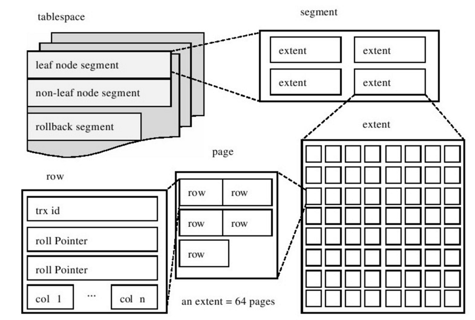

字符集
计算机中只能存储二进制数据，因此字符串的存储需要编码与解码。将一个字符映射成二进制数据的过程叫编码，将二进制数据映射到一个字符的过程叫做解码。人们抽象出一个字符集的概念来描述某个字符范围的编码规则。常用的字符集有：
- ASCII：共收录128个字符，包括空格、标点符号、数字、大小写字母和一些不可见字符。1个字符使用1Byte编码。
- ISO 8859-1：别名latin1，共收录256个字符，是在ASCII字符集的基础上又扩充了128个西欧常用字符。1个字符使用1Byte编码。
- GB2312：收录了汉字以及拉丁字母、希腊字母、日文平假名及片假名字母、俄语西里尔字母。其中收录汉字6763个，其他文字符号682个，兼容ASCII字符集。属于变长编码方式，ASCII字符采用1Byte编码，其他则采用2Byte编码。
- GBK：在收录字符范围上对
GB2312字符集作了扩充。也是变长编码方式。 - utf8：即万国码，收录地球上所有字符，包括表情符号，且在不断扩充。兼容ASCII，采用变长编码方式。编码一个字符需要使用1~4Byte。
MySQL中的utf8指的是utf8mb3，属于阉割过的utf8字符集，使用1~3Byte编码。若要可编码表情符号，需要使用utf8mb4。可使用
SHOW CHARSET查看MySQL支持的字符集，SHOW COLLATION查看字符的比较规则。
InnoDB表结构
行记录结构
数据页就是B+树的一个节点，它是磁盘和内存间交互的基本单位，一页的大小一般为16KB。一个数据页节点中可存储多条行记录，行记录又分为4种格式：Compact、Redundant、Dynamic和Compressed。
Compact行格式
这种行格式下，一条记录可分为如下几部分：

变长字段长度列表：逆序存储当前记录中变长数据类型实际占用的Byte数，如
VARCHAR(M)、VARBINARY(M)、各种TEXT类型和各种BLOB类型，以及采用变长编码方式字符集时的CHAR类型。NULL值列表：使用一个二进制位逆序存储当前记录中某列的NULL值，为NULL则置1，否则为0。
记录头信息：由5个固定Byte组成，这40个bit的详细信息如下表：
| 名称 | 大小（单位：bit） | 描述 |
|---|---|---|
| 预留位1 | 1 | 没有使用 |
| 预留位2 | 1 | 没有使用 |
| delete_mask | 1 | 标记该记录是否被删除。1表示记录被删除，实际上记录依旧存储在磁盘上，之所以不立即删除该记录是因为删除后需要把其他记录在磁盘上重新排列，可能会涉及B+树的自平衡操作，需要性能消耗。被1标记的记录会组成一个垃圾链表，这些空间属于可重用空间，之后若插入新记录，可直接原地覆盖，若重新插入相同记录，则只需要把该标记位置0即可。 |
| min_rec_mask | 1 | B+树的每层非叶子节点中的最小记录都会添加该标记。 |
| n_owned | 4 | 表示当前记录拥有的记录数。 |
| heap_no | 13 | 表示当前记录在记录堆的位置信息。 |
| record_type | 3 | 表示当前记录的类型，0表示叶子节点记录（数据页），1表示B+树非叶子节点记录，2表示最小记录，3表示最大记录。 |
| next_record | 16 | 表示下一条记录的相对位置。注意，下一条记录指得并不是按照我们插入顺序的下一条记录，而是按照主键值由小到大的顺序的下一条记录。而且规定 Infimum记录（也就是最小记录） 的下一条记录就是本页中主键值最小的用户记录，而本页中主键值最大的用户记录的下一条记录就是Supremum记录（也就是最大记录）。因此一页中的记录是一个按主键值升序的单链表，where子句使用主键匹配时可使用二分查找定位记录。 |
- 记录的真实数据：除了用户在表中显式定义的列，InnoDB还会添加如下三个隐藏列：
| 列名 | 是否必须 | 占用空间 | 描述 |
|---|---|---|---|
| DB_ROW_ID | 否 | 6Byte | 行ID，唯一标识一条记录 |
| DB_TRX_ID | 是 | 6Byte | 事务ID |
| DB_ROLL_PTR | 是 | 7Byte | 回滚指针 |
InnoDB的表都是根据主键顺序组织存放的，而聚簇索引就是按照主键构造一棵B+树。如果用户创建表时没有指定主键，InnoDB会选择表中的第一个Not NULL Unique Index（非空唯一索引）作为主键，若这也没有，那么就会添加隐藏列DB_ROW_ID作为主键，这是一个隐式的自增ID。
行溢出数据
一行记录除去隐藏列和记录头信息，最多占用的Byte长度加起来不能超过65525。但是一个数据页只有16KB，因此对于占用存储空间非常大的列（VARCHAR/TEXT/BLOB等类型），在记录的真实数据处只会存储该列的一部分数据，把剩余的数据分散存储在几个其他的页中，然后记录的真实数据处用20个Byte存储指向这些页的地址，如图所示：
其余行格式
Redundant行格式是MySQL5.0之前使用的一种行格式，而MySQL8.0默认使用的行格式为Dynamic。Dynamic和Compressed行格式与Compact行格式相似，但是在行溢出数据处理时不同，它们不会在记录的真实数据处存储字段真实数据的前768个Byte，而是把所有的数据都存储到其他页面中。而Compressed和Dynamic不同的一点是，Compressed行格式会采用压缩算法对页面进行压缩，以节省空间。
数据页结构
一个16KB的数据页节点可划分为如下几部分：

用户存入的记录都在User Records部分，每插入一条记录User Records部分增大，相应的Free Space减少 。Infimum + Supremum存储当前页InnoDB自动添加的最小记录和最大记录，这里的最大和最小是指的是主键。
Page Directory：InnoDB会把一页中的记录划分为若干个组，每个组的最后一个记录的地址偏移量作为一个槽(Slot)，存放在Page Directory中，所以在一个页中根据主键查找记录是非常快的，分为两步：
- 通过二分法确定该记录所在的槽。
- 通过记录的next_record属性遍历该槽所在的组中的各个记录。
Page Header：存储当前页记录的状态信息。
- File Header：不同类型的页都会以File Header作为第一个组成部分，它描述了一些针对各种页都通用的一些信息，如校验和、上一页的页号和下一页的页号（由此可知，B+树每一层的所有节点连接成一个双向链表）、页面类型、当前页页号、LSN值(Log Sequence Number)等。
- File Trailer：为了避免数据页同步过程中断电导致页没有同步完毕的情况，使用该部分进行校验页是否完整。前4个Byte代表页的校验和，后4个Byte代表页面最后修改时对应的日志序列位置（LSN）。若不匹配File Header中的校验和和LSN值说明数据页同步出错。
表空间
InnoDB的表空间由段（segment）、区（extent）、页（page）组成，其逻辑存储结构如下图所示：

表空间可以看作InnoDB存储引擎结构的最高层，即存储引擎基于表。默认情况下InnoDB存储引擎有一个共享表空间ibdata1，这张表中存放了回滚（undo）信息、插入缓冲索引页、系统事务信息和二次写缓冲信息等系统信息，再MySQL8.0之后，用户创建表后则会创建一个独立表空间，存放数据、索引和插入缓冲Bitmap页。
- 段：由上图可知，常见的段有数据段（B+树叶子节点段）、索引段（B+树非叶子节点段）和回滚段等。对段的管理是由引擎自身完成的，DBA不能对其控制。
- 区：任何情况下一个区都占用1MB，默认一个区由64个连续的页组成，一页占16KB。创建的表默认大小是96KB，那创建的表的大小至少是1MB才对啊？其实这是因为在每个段开始时，先有32个页大小的碎片页（fragment page）来存放数据，当这些页使用完之后才是64个连续页的申请。如果存放一条记录就开辟1MB的空间，岂不是很浪费？
- 页：页是InnoDB磁盘管理的最小单位。默认每个页大小为16KB，可通过参数
innodb_page_size修改。注意区的大小依旧是1MB，一个区的页的数量会产生变化。常见的页类型有：- 数据页（B-tree Node）。
- Undo页（Undo Log Page）。
- 系统页（System Page）。
- 事务数据页（Transaction system Page）。
- 插入缓冲位图页（Insert Buffer Bitmap）。
- 插入缓冲空闲列表页（Insert Buffer Free List）。
- 未压缩的二进制大对象页（Uncompressed BLOB Page）。
- 压缩的二进制大对象页（Compressed BLOB Page）。
MySQL存储目录
使用SHOW VARIABLES LIKE 'datadir';查看数据库、表文件、视图、触发器等的存储目录。下面依次介绍它们在文件系统中的表示：
数据库
每当我们使用CREATE DATABASE 数据库名;语句创建一个数据库的时候，文件系统中MySQL存储目录下就会创建一个以数据库名为文件名的子目录，并在该子目录下创建一个名为db.opt的文件，该文件包含了该数据库的各种属性，比如该数据库的字符集和比较规则。
表
表的信息可以分为两种：表结构的定义信息；表中的数据。
对于InnoDB，每创建一个表都会建立一个独立表空间，这个表示独立表空间的文件就是表名.ibd，在MySQL8.0之后，表结构定义信息和表中的数据（索引）都存储在该文件中。
对于MyISAM，其表结构信息存储在表名.frm这个二进制文件中，而且不像InnoDB的索引即数据，MyISAM中的索引全是二级索引（辅助索引），因此MyISAM的索引和数据是分开存放的。其中表名.MYD代表数据文件，表名.MYI代表索引文件
视图
视图其实是虚拟的表，所以在存储视图的时候是不需要存储真实的数据的，只需要把它的结构存储起来就行了。和表一样，描述视图结构的文件也会被存储到所属数据库对应的子目录下边，只会存储一个视图名.frm的文件。